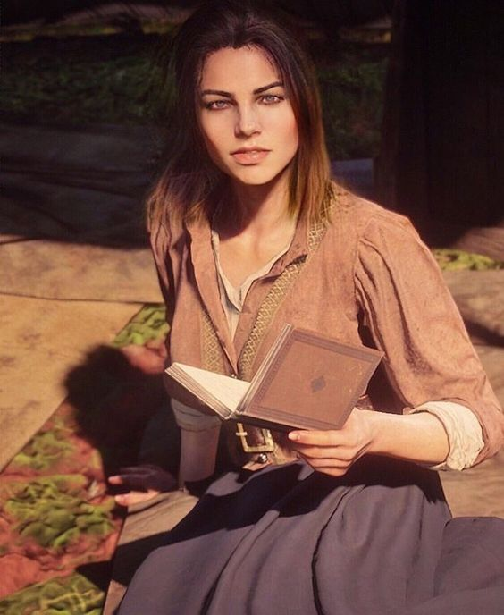

|  |
The story begins with the gang on the run after a failed robbery in the town of Blackwater. As Arthur, players navigate through a changing world, facing lawmen, rival gangs, and the encroachment of civilization on the frontier. The gang seeks refuge in various locations, including the sprawling wilderness and growing towns. The narrative is character-driven, with a strong emphasis on the relationships within the gang. Arthur's loyalty to Dutch, the gang's patriarch, is central, and players witness the dynamics and tensions within the group. Arthur's personal journey is also a significant aspect, as he grapples with his actions, morality, and the consequences of a life of crime. Throughout the game, players engage in a mix of missions, side activities, and open-world exploration. The world is vast and dynamic, with a variety of landscapes, wildlife, and encounters. Players can interact with a diverse range of characters, from lawmen and outlaws to settlers and Native Americans. Red Dead Redemption 2 features a detailed honor system that responds to the player's choices. Actions such as helping strangers or committing crimes influence Arthur's moral alignment, affecting how others perceive him and altering the game's outcome. Without going into specific spoilers, the narrative builds towards a dramatic climax as the gang faces external pressures and internal strife. The game is known for its immersive storytelling, rich characters, and attention to detail, offering players a compelling and emotional experience in the closing chapter of the American Wild West. |